Publications
- All
- Ongoing Projects
- Conferences
- Journals
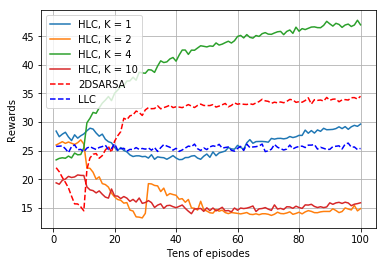
Two-level Deep Reinforcement Learning Architecture for Traffic Signal Control of Multiple Intersections
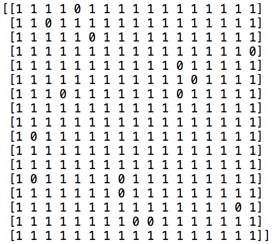
LT-based Distributed Storage Using Deep Reinforcement Learning
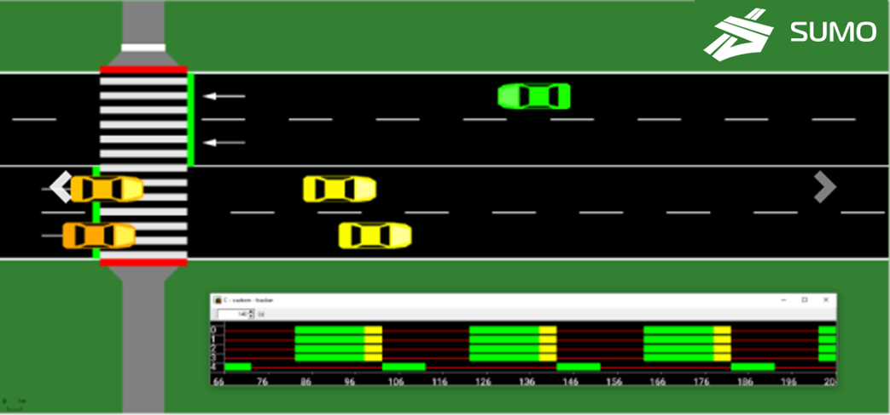

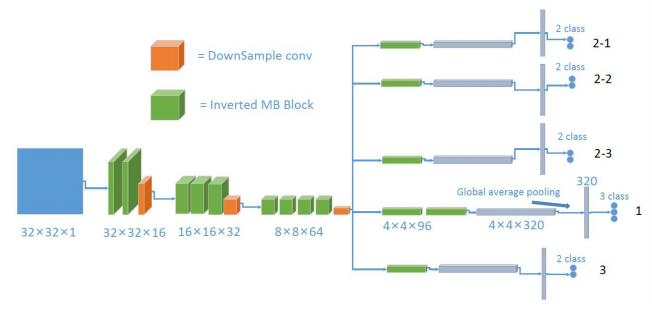
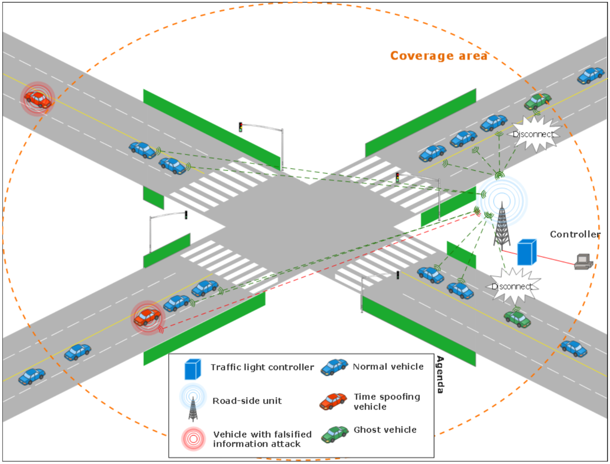
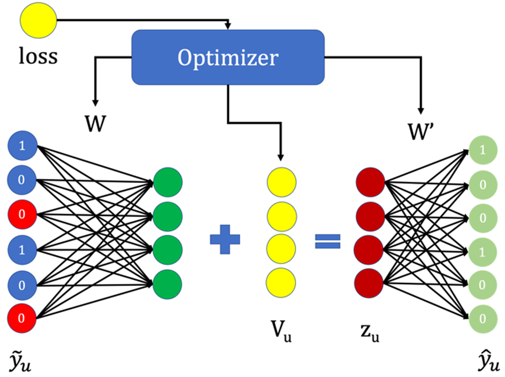

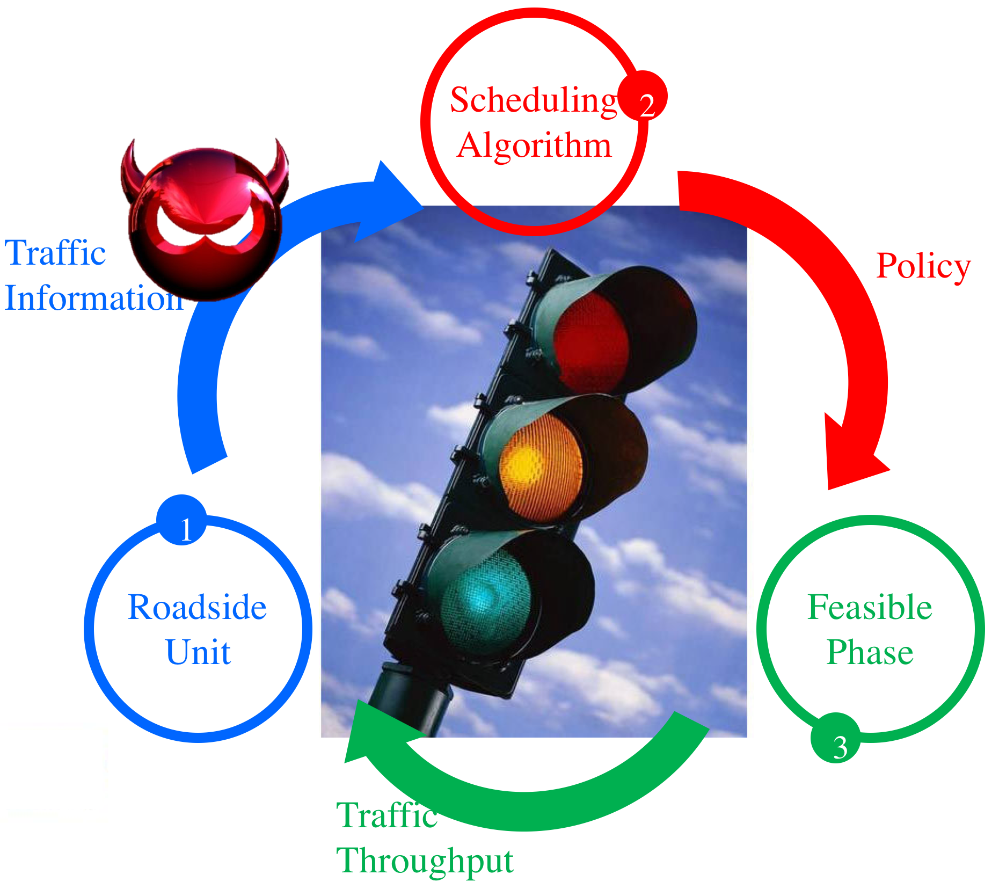
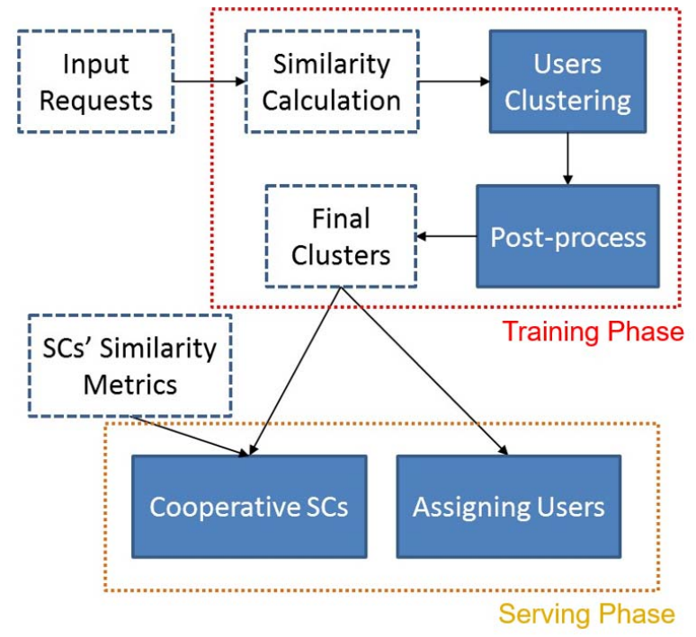
Cooperative Caching Plan of Popular Videos for Mobile Users by Grouping Preferences
IEEE 16th International Conference on Pervasive Intelligence and Computing (PiCom), Aug. 2018.
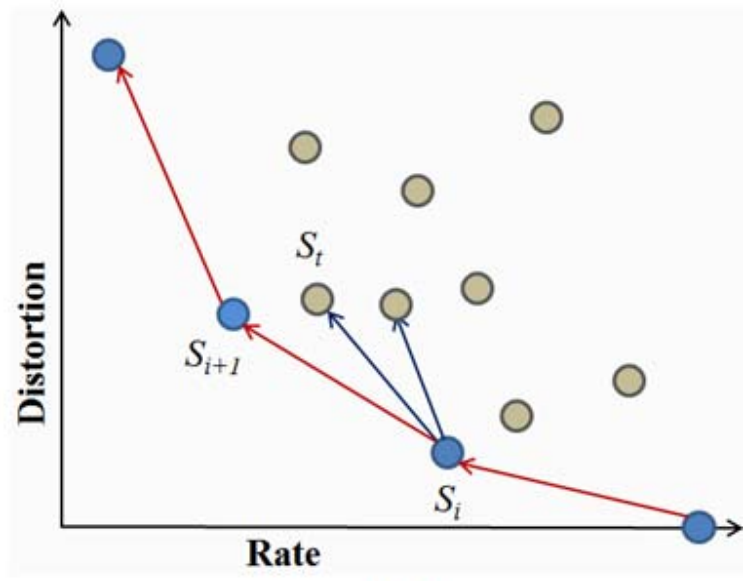

Interpolation based consensus clustering for gene expression time series
BMC Bioinformatics.2015;16:117.
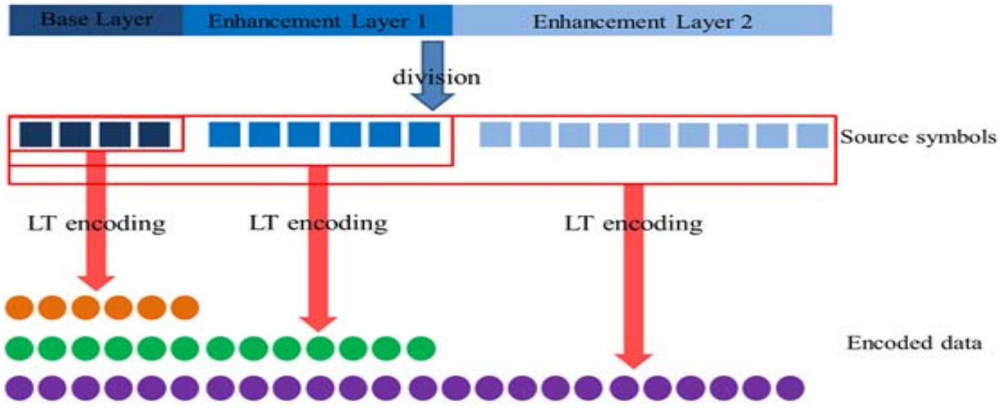
Distributed Delivery of Popular Videos over Ultra-Dense Networks
IEEE Symposium on Computers and Communication (ISCC), Jul. 2015.
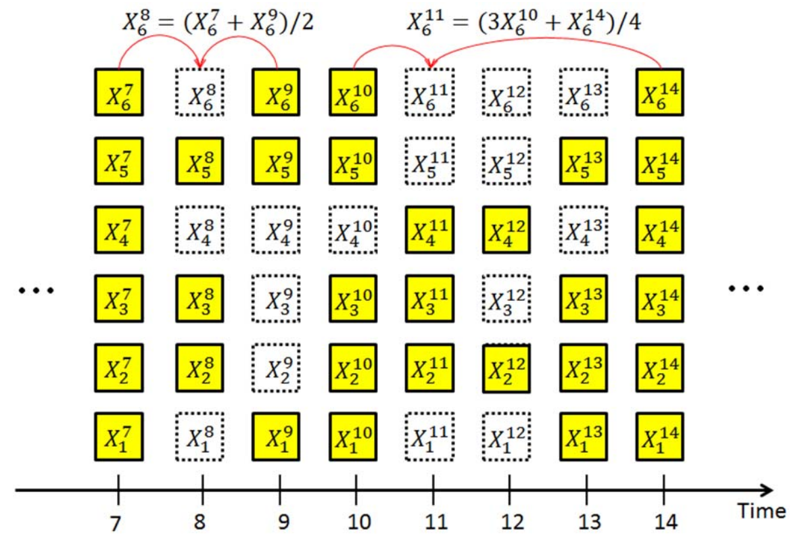
A Framework of Temporal Data Retrieval for Unreliable WSNs Using Distributed Fountain Codes
IEEE 9th International Conference on Mobile Ad-hoc and Sensor Networks (MSN), Dec. 2013.